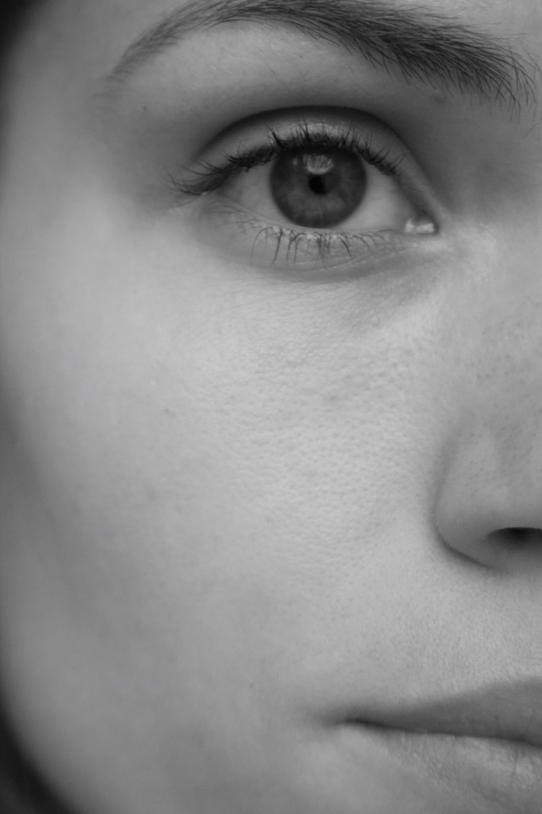
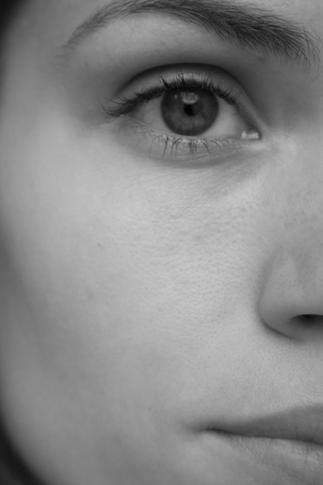

This is me
Sophie Spang
Siden jeg var helt lille, har jeg altid elsket at være kreativ. Det ligger ret naturligt til mig - jeg synes det er sjovt, spændende og udfordrende. Jeg oplever ofte, at min hukommelse ikke er den bedste, så jeg kan derfor have svært ved at huske minder, oplevelser og specifikke fakta. Min tilgang til livet har derfor altid været mere legende og kreativ i nærmest alt jeg gør.
“Siden jeg var helt lille, har jeg altid elsket at være kreativ. Det ligger ret naturligt til mig - jeg synes det er sjovt, spændende og udfordrende”
Om mig
En kreativ jyde
Jeg er en 23 årig pige der er født og opvokset i smilet by. I juni 2016 fik jeg min afgangseksamen på Aarhus Handelsgymnasium i Viby, hvor min studieretning var Kommunikation og IT. Det var også her, at min interesse for webudvikling og markerting startede. Udover mit kreative sind, fandt jeg også hurtigt ud af, at det lidt mere “nørdet” var noget jeg virkelig holdte af. Ikke lang tid efter, fandt jeg ud af, at en uddannelse som Multimediedesigner var lige præcis noget for mig. Dog var jeg ikke helt klar efter gymnasiet. Jeg havde stadig brug for nogle år, hvor jeg kunne opleve verdenen og nogle af livets udfordringer, samt udvikle mig selv. Derfor besluttede jeg mig for at rejse til Australien, hvor jeg fik lov at udforske mig selv og min personlighed.
Da jeg kom hjem, tog jeg springet til København, hvor jeg her valgte at gå fuldtid som model. Jeg har arbejdet som model siden jeg var helt lille, og det jeg altid har elsket allermest ved det er, at jeg hopper ind i en boble, hvor jeg kan få lov at udtrykke mig kreativ, sammen en masse talentfulde mennesker.
Drømmen tager form
Efter 3 år som fuldtidsmodel begyndte det at krible i fingrene for at komme tilbage på skolebænken. Jeg havde i mellemtiden siddet med nogle Adobe programmer derhjemme og til et kursus, men nu var det tid til at gå all in. I sommeren 2020 kom jeg ind på Multimediedesigner uddannelsen på KEA, og nu har jeg snart gennemført første semester. Uddannelsen passer spot-on på mig, og jeg glæder mig til at se, hvor meget jeg kan udvikle mine evner og viden på KEA. Denne hjemmeside er et potfolio af min proces og læren på første semester. Jeg håber du kan lade dig inspirere af mine projekter og udvikling, og håber at du vil følge med på min rejse
 

Kontakt
Har jeg fanget din opmærksomhed? Så er du selvfølgelig også velkommen til at tage min. Ring eller skriv direkte til mig, eller benyt kontaktformularen.
Jeg glæder mig til at høre fra dig!